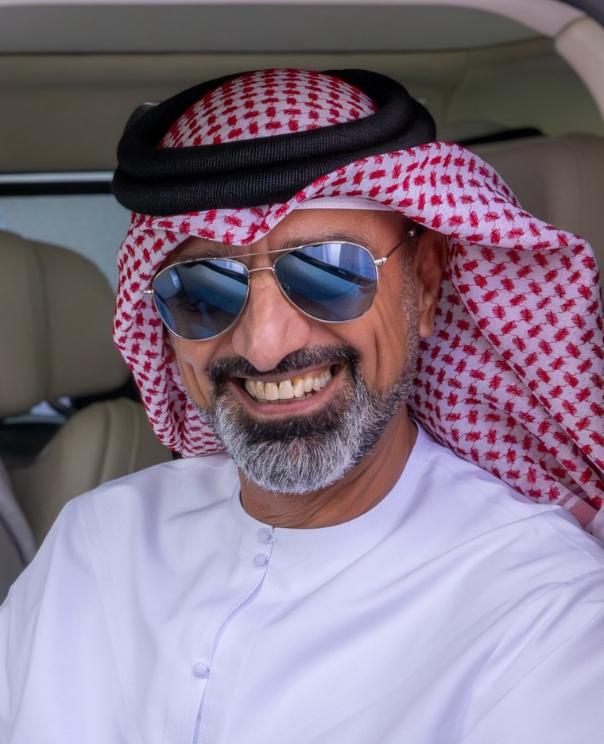

Ajman Vision 2030
Drawn up with the emirate itself — leaders, officials, merchants, students and children — and built on eight guiding principles and eight strategic directions that hold economic and social development in balance.

Crown Prince of Ajman and Chairman of its Executive Council — a leader of the ruling house of Al Nuaimi, raised on the values of heritage, discipline and service. The same eye that reads a falcon in flight reads a movement through a sapphire caseback: patience, precision, and respect for craft.
Born on 31 March 1969, son of His Highness Sheikh Humaid bin Rashid Al Nuaimi, Ruler of Ajman and Member of the UAE Supreme Council — raised in a ruling house known for wisdom and vision.
Joined the inaugural cohort of the Police College, taking first place in shooting and equestrianism, then pursued advanced studies in management and security sciences in the United Kingdom.
Appointed Crown Prince on 9 October 1993, standing beside his father in guiding the emirate's affairs and its people.
Leading Ajman's government toward excellence and sustainable growth — chairing Ajman Bank, the Board of Trustees of Ajman University, and the Humaid bin Rashid Al Nuaimi Charitable Foundation.
A devoted falconer and founder of Ajman Stud (2002), His Highness carries the Emirati heritage of precision into collecting — assembling one of the most admired horological collections in the Gulf, from royal Daytonas to one-of-one commissions.
Al Nuaimi has ruled Ajman since 1820 — the smallest of the seven emirates, and among the oldest continuous ruling houses on the Arabian Gulf.
Two decades at the head of the Executive Council, read through what was actually built.
Drawn up with the emirate itself — leaders, officials, merchants, students and children — and built on eight guiding principles and eight strategic directions that hold economic and social development in balance.
A standing programme to seat innovation and excellence inside government itself, rather than leave them to chance.
A directive to strip procedure back to what genuinely serves the citizen, and to remove what does not.
Ajman's service centres measured against a world standard — several now carrying a seven-star classification.
Service judged as the public actually meets it, unannounced, and reported without varnish.
A standing fund so that a citizen needing care beyond the emirate's hospitals is not left to meet the cost alone.
Established with the Ministry of Education to hold private schooling in Ajman to a standard worth the name.
Conferred in December 2024 in recognition of his work in advancing the government of Ajman — the highest distinction of the Mohammed bin Rashid Government Excellence Award.
A collection is a form of custody. What is kept well outlives the one who keeps it.The Majlis of Time · Ajman